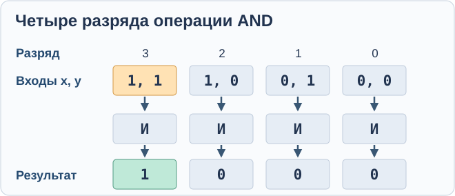

Биты, маски и std::bitset
Бит принимает одно из двух значений, 0 или 1. Несколько битов подряд могут обозначать число. Чтобы прочитать его, сложи веса всех позиций, в которых стоит единица.
| Номер позиции | 3 | 2 | 1 | 0 |
|---|---|---|---|---|
| Вес | 8 | 4 | 2 | 1 |
| Биты числа 13 | 1 | 1 | 0 | 1 |
Позиции нумеруются справа налево с нуля. В числе 1101 единицы стоят на позициях 3, 2 и 0, поэтому его значение равно 8 + 4 + 1 = 13. В C++ префикс 0b обозначает двоичную запись числа, а 0x — шестнадцатеричную.
Побитовые операции
| Выражение | Когда бит результата равен 1 | Для x = 0b1100 и y = 0b1010 |
|---|---|---|
x & y |
Оба входных бита равны 1 | 0b1000 |
x | y |
Хотя бы один входной бит равен 1 | 0b1110 |
x ^ y |
Входные биты различаются | 0b0110 |
~x |
Бит x равен 0 |
Младшие четыре бита равны 0011, остальные биты тоже меняются |
Например, чтобы вычислить 1100 & 1010, сравни два числа по столбцам. Только в крайнем левом столбце стоят две единицы. Получится 1000.
Как операция И выглядит в железе. Логический элемент И принимает два электрических сигнала. Уровни напряжения кодируют 0 и 1. Если оба входа кодируют единицу, выход тоже кодирует единицу. Для целого числа одинаковое правило применяется отдельно в каждом разряде.

Побитовые операции
Нажми на бит числа A или B. Посмотри, что изменилось в том же столбце результата, и попробуй другую операцию.
Номер разряда
A
B
Результат
Как переключить два флага?
В числе A = 12 нужно переключить разряды 3 и 0, сохранив остальные. Включи задачу и собери для XOR подходящую маску B.
Между соседними столбцами нет переноса. Такую операцию над машинным словом обычно выполняет арифметико-логическое устройство процессора за одну команду AND. Рисунок показывает четыре младших разряда для удобства чтения. Как устроен процессор.
Операторы &&, || и ! определяют истинность целого выражения. Например, 2 && 1 даёт true, а 2 & 1 даёт 0, потому что у этих чисел нет общих установленных битов. Запись ^ обозначает исключающее ИЛИ. В C++ она не возводит в степень.
Сдвиги и отдельные биты
Для беззнаковых чисел сдвиги заполняют освободившиеся разряды нулями. Сдвиг x << k перемещает биты в сторону больших весов и отбрасывает старшие биты, которым не хватило места. Когда потерь нет, это умножение на 2 в степени k. Сдвиг x >> k равен целочисленному делению на ту же степень двойки. Например, 13u << 1 равно 26, а 13u >> 1 равно 6.
Маска — число, у которого единицами отмечены интересующие нас позиции. Если нужен только бит 1, берём число 0001 и сдвигаем его влево на одну позицию. Получится 0010.
В примерах 1ULL имеет тип unsigned long long. Выбирай k от 0 до 63, чтобы сдвиг гарантированно помещался в ширину этого типа на любой реализации.
Для ширины в конкретном окружении есть std::numeric_limits<unsigned long long>::digits из <limits>. Сдвиг на отрицательное число или на число, равное ширине типа после целочисленных продвижений или больше, недопустим. Тип левого операнда важен. В выражении 1 << k сдвигается int, даже если результат присваивается широкой переменной.
unsigned long long flags = 0b1101;
unsigned k = 1;
auto bit = 1ULL << k; // Маска из одной единицы: 0010.
bool was_set = (flags & bit) != 0; // false: второй справа бит выключен.
flags |= bit; // 1111: включить выбранный бит.
flags &= ~bit; // 1101: выключить только этот бит.
flags ^= bit; // 1111: переключить выбранный бит.
auto digit = (flags >> k) & 1ULL; // 1: выбранный бит перемещён на позицию 0.
Скобки в (flags & bit) != 0 задают нужный порядок: сначала применить маску, затем сравнить с нулём. Если требуется проверить сразу несколько флагов, (flags & mask) != 0 означает «установлен хотя бы один», а (flags & mask) == mask — «установлены все». Например, маска 0b1010 проверяет биты 1 и 3.
Подсчёт единиц
Для положительного x число x - 1 меняет младшую единицу на ноль, а стоящие справа нули — на единицы. Поэтому x & (x - 1) убирает ровно младшую единицу. Например, из 0b101100 получится 0b101000.
int count_ones(unsigned long long x) {
int count = 0;
while (x != 0) {
x &= x - 1;
++count;
}
return count;
}
// count_ones(0b101100) даёт 3, count_ones(0) даёт 0.
Цикл работает столько итераций, сколько в исходном числе единиц. В C++20 доступен std::popcount(x) из <bit> для беззнаковых типов.
Набор битов фиксированной длины
Тип std::bitset<N> из <bitset> хранит ровно N битов. Размер известен при компиляции. Например, std::bitset<8>(13) хранит 00001101. Конструирование из целого использует младшие N битов. В записи для человека старший бит слева, а индекс 0 по-прежнему обозначает крайний бит справа.
#include <bitset>
#include <iostream>
int main() {
std::bitset<8> before(0b00001101);
std::bitset<8> after("00000111");
auto changed = before ^ after; // Единицы в местах изменений.
std::cout << changed << '\n'; // 00001010
std::cout << changed.count() << '\n'; // 2
std::cout << changed.test(3) << '\n'; // 1
changed.reset(3); // 00000010
changed.set(0); // 00000011
changed.flip(1); // 00000001
std::cout << changed.to_ullong() << '\n'; // 1
}
В строках 00001101 и 00000111 различаются биты 3 и 1. Поэтому результат XOR равен 00001010, а count() возвращает 2.
| Что нужно узнать или изменить | Метод |
|---|---|
Бит на позиции i |
test(i) проверяет границы. b[i] подходит для заведомо допустимого индекса |
| Есть единицы? Все биты нулевые? Все единичные? | any(), none(), all() соответственно |
| Поставить 1, поставить 0 или переключить бит | set(i), reset(i), flip(i) |
| Сделать то же для всех позиций | set(), reset(), flip() |
Два набора одинакового размера можно объединять через &, |, ^. Сдвиг на N позиций и больше даёт нулевой набор. to_string() сохраняет все N разрядов, включая ведущие нули. to_ullong() выбрасывает std::overflow_error, когда значение слишком велико для результата.